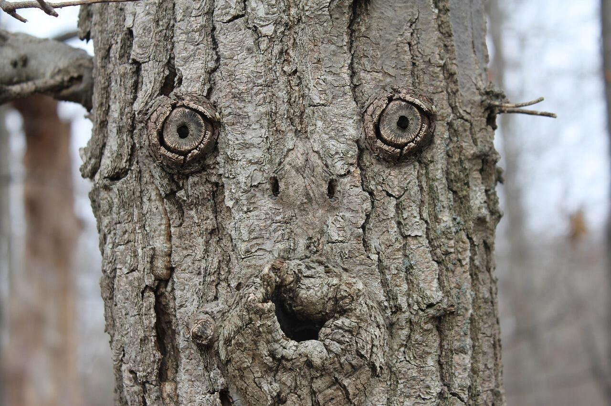

AN UNCERTAIN ARCHIVE
WHAT DO YOU
THINK YOU SEE?
Reveal one piece at a time. You and the machine will classify exactly what is visible—then revise your answers as the image changes.
MOVE TO REVEAL · LEAVE TO FORGET
OPTIONAL CATEGORY GUIDE
LEARN THE FOUR
WAYS OF SEEING.
Swipe the stack to move between categories. Tap a card to flip it and read the definition.
01 / 04
01/ 04
Tear open the first clue.
Click anywhere on the covered image.
CLICK TO TEAR
FOUR VERSIONS OF THE SAME IMAGE
YOUR EYES CHANGED.
SO DID THE MACHINE.
